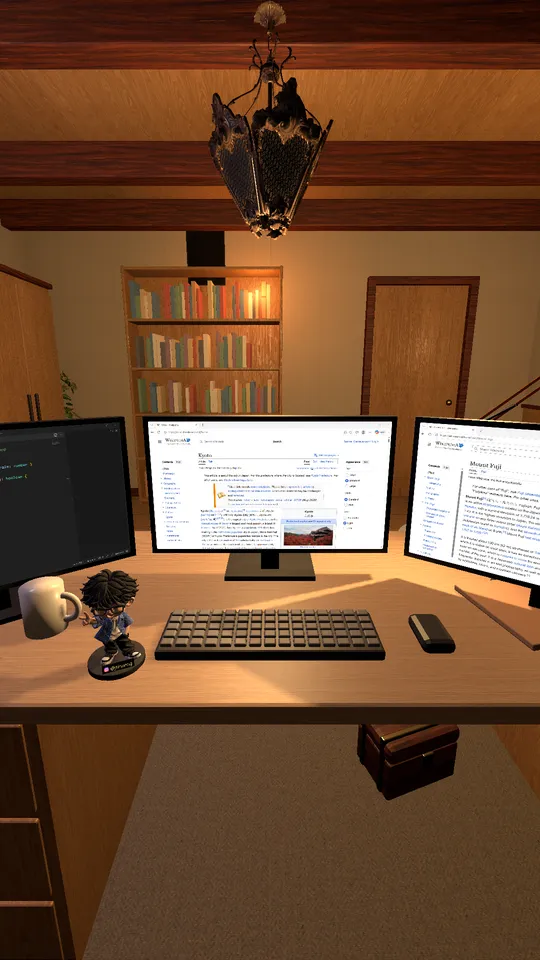
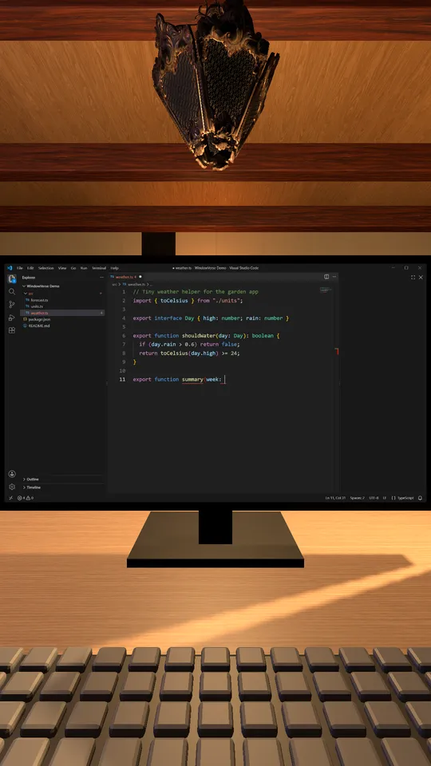
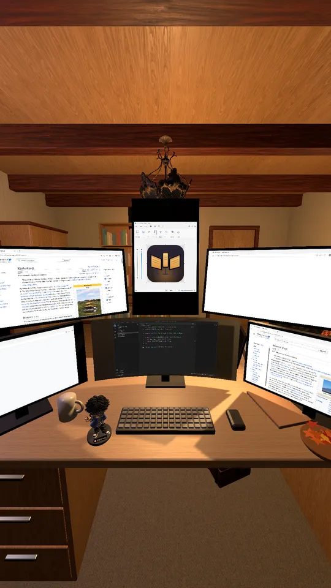
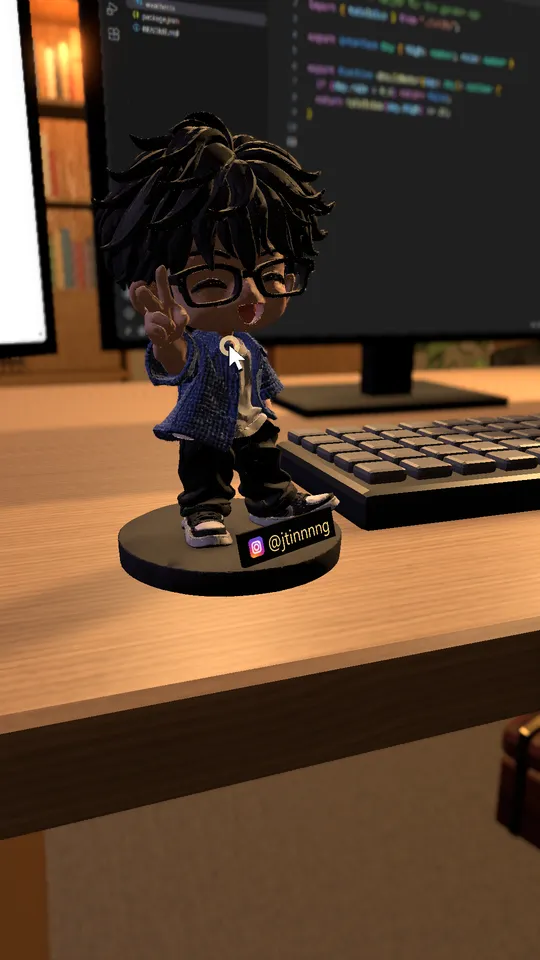

1
Pick a window
Click an empty screen and choose any open window. It appears on that monitor, live.
WindowVerse puts your real windows on a whole desk of virtual monitors, inside a cozy 3D room. More screens, no extra monitors.
Download for WindowsYour windows stay real apps. WindowVerse shows them on monitors in the room, live.

Click an empty screen and choose any open window. It appears on that monitor, live.

Click a screen to fly in and use the app: type, scroll, click. Press Ctrl+Alt+Shift+F10 to go back to the room.

Landscape, portrait, a curved ultrawide, up to six screens. Windows are fitted to each screen's shape.
The monitors are the point. The room makes it nice to stay.
From a work room to a Japanese room, with morning, day, dusk and night lighting.
The room follows your clock. Rain, snow or fog outside the window, and the seasons change the decorations.
Lunar New Year, Valentine's Day, Mid-Autumn, Halloween and Christmas decorate the room when the day comes.
Stand up, walk around, change outfits, rest on the sofa or the bed. Click the figurine on the desk for a new pose.
Forgot a shortcut? Click the notebook or press F1.
Switch the language any time in Settings.

| System | Windows 11 |
|---|---|
| Graphics | A DirectX 12 graphics card. Tested on a laptop with an NVIDIA GeForce RTX 3050 (smooth at 144 fps); integrated graphics are still being tested. |
| Memory | About 1.1 GB while running with three screens |
| Download | 76 MB installer, no administrator rights needed |
Yes. WindowVerse is free to download and use.
Your apps keep running normally. WindowVerse only moves or resizes a window when you put it on a screen whose shape is different, and puts it back when you remove it or quit.
A laptop with a dedicated graphics card runs it smoothly. Support for integrated graphics is being tested; try it and see.
Press Ctrl+Alt+Shift+F10, or move the mouse to the top edge of the screen and click "Back to room".
WindowVerse is made for one screen. With a second monitor it still works, but that setup has had less testing.